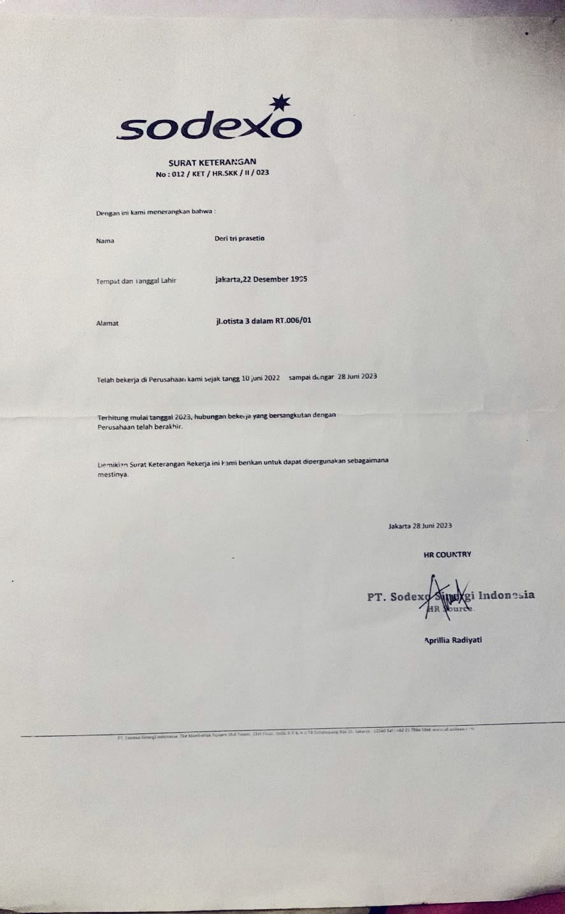
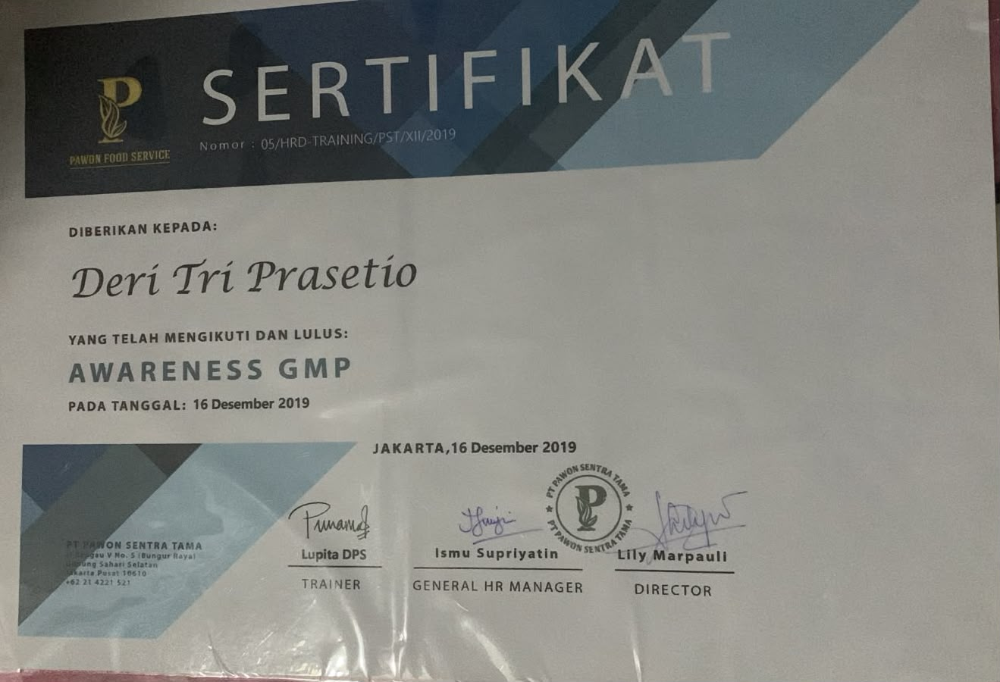
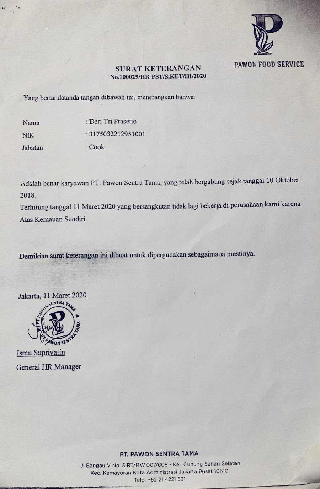

30 Jun 2014 – 1 Jan 2015
Kowylon
Helper
Membantu memotong sayuran dan menyiapkan bahan-bahan yang diperlukan untuk proses persiapan makanan.
Head Chef dengan pengalaman di bidang pengolahan makanan, persiapan bahan, pengelolaan operasional dapur, dan menjaga kualitas hidangan. Terbiasa bekerja mengikuti standar operasional, menjaga kebersihan, serta bekerja sama dalam tim.
Tentang Saya
Saya memiliki pengalaman dalam lingkungan kerja kuliner, mulai dari persiapan bahan hingga pengolahan makanan dan pengelolaan kegiatan dapur.
Lulusan SMK BPSK 2 Jakarta dengan pengalaman di sejumlah tempat kerja di bidang kuliner. Saya terbiasa memperhatikan kualitas rasa, tampilan hidangan, kebersihan area kerja, serta pelaksanaan tugas sesuai standar yang ditetapkan. Saya juga memiliki pengalaman mendukung koordinasi tim dan operasional dapur.
Perjalanan Karier
Pengalaman profesional di bidang kuliner berdasarkan riwayat pekerjaan yang tercantum dalam CV.
Membantu memotong sayuran dan menyiapkan bahan-bahan yang diperlukan untuk proses persiapan makanan.
Membuat makanan berdasarkan pesanan dan memastikan proses memasak mengikuti standar operasional yang berlaku.
Mendukung pengolahan pangan, menjaga kebersihan area dapur, membantu pengawasan staf baru, serta memperhatikan rasa dan tampilan hidangan.
Menyiapkan makanan untuk display dan pesanan pelanggan, dengan memperhatikan kualitas makanan serta kebersihan dapur.
Mendukung pengendalian keluar-masuk barang, proses memasak, dan konsistensi rasa serta tampilan makanan sesuai standar.
Mengontrol operasional, memastikan ketersediaan bahan, serta menjaga kualitas rasa dan tampilan hidangan yang disajikan.
Menyiapkan makanan dalam jumlah besar, termasuk produksi sekitar 3.000 porsi per hari sesuai keterangan dalam CV, dengan mengikuti standar operasional.
Menyiapkan makanan berdasarkan pesanan pelanggan serta menjaga keamanan makanan, kualitas, dan tampilan hidangan.
Menyusun menu harian, membangun koordinasi tim, memantau kualitas rasa dan tampilan, serta mendukung operasional agar sesuai SOP dan target yang ditetapkan.
Menyusun menu harian, membangun koordinasi tim, memantau kualitas rasa dan tampilan, serta mendukung operasional agar sesuai SOP dan target yang ditetapkan.
Kompetensi
Kompetensi utama yang mendukung pekerjaan di bidang pengolahan makanan dan operasional dapur. Persentase berikut merupakan estimasi tampilan dan dapat disesuaikan dengan kemampuan aktual.
Mengolah makanan berdasarkan pesanan dengan memperhatikan proses memasak, rasa, dan penyajian.
Menyiapkan bahan, memotong sayuran, dan mendukung kesiapan bahan sebelum proses produksi.
Mendukung alur kerja dapur, ketersediaan bahan, serta pelaksanaan pekerjaan sesuai SOP.
Menjaga kebersihan area kerja dan memperhatikan keamanan pangan selama proses produksi.
Memperhatikan konsistensi rasa, tampilan, dan kualitas makanan sebelum disajikan.
Membantu pembagian pekerjaan, koordinasi tim, dan pengawasan kegiatan operasional dapur.
Mendukung persiapan dan produksi makanan dalam jumlah besar sesuai target operasional.
Bekerja sama dengan anggota tim untuk menjaga kelancaran proses persiapan dan produksi.
Latar Belakang
Pendidikan formal.
Pendidikan Sekolah Menengah Kejuruan
Informasi tahun pendidikan dapat diperbarui sesuai ijazah.
Bukti Profesional
Dokumentasi pengalaman kerja dan sertifikat sebagai bukti pendukung perjalanan profesional Deri Tri Prasetio.
Surat keterangan pengalaman kerja. Klik tombol di bawah untuk melihat dokumen.

Dokumentasi sertifikat pendukung kompetensi dan pengembangan profesional.

Sertifikat tambahan untuk melengkapi portofolio profesional.

Sertifikat tambahan untuk melengkapi portofolio profesional.
Mari Terhubung
Untuk informasi lebih lanjut mengenai pengalaman kerja atau peluang profesional, silakan hubungi melalui kontak berikut.